Week 3: Hand Tools and Fabrication
Kinetic Sculpture
For this week, I decided to make a cute little sculpture that would have two ducks bobbing up and down on top of a box. I also wanted the ducks to bob at different speeds to make them have a little personality.
To start, I learned how to make a gear in fusion manually by following this tutorial. Even though there was a tool in Fusion to make gears programatically (and more quickly), I wanted to try out the manual way to better understand how gears work. I successfully made a 20-tooth gear using this manual method. Then, I made a 10-tooth gear using the Fusion add in. Both are pictured below:
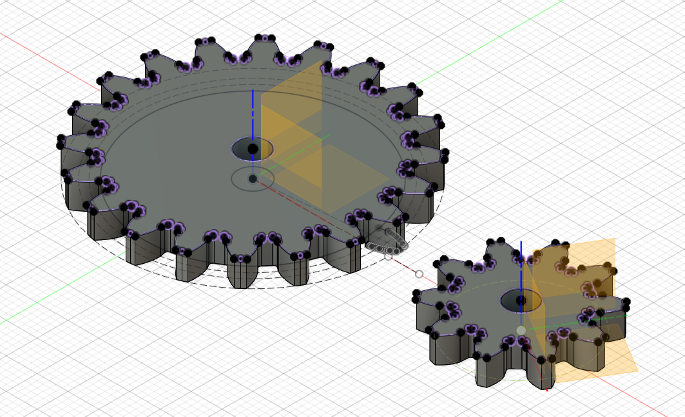
Download Gear ModelEven though I wouldn't ultimately use these exact gears in my final design, I wanted to test that they would would mesh together and fit on the dowels I was planning to use for the axles. So, I cut them out of cardboard and tested them, and they worked!
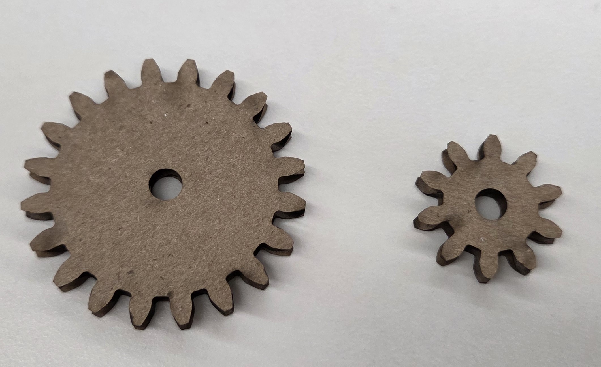
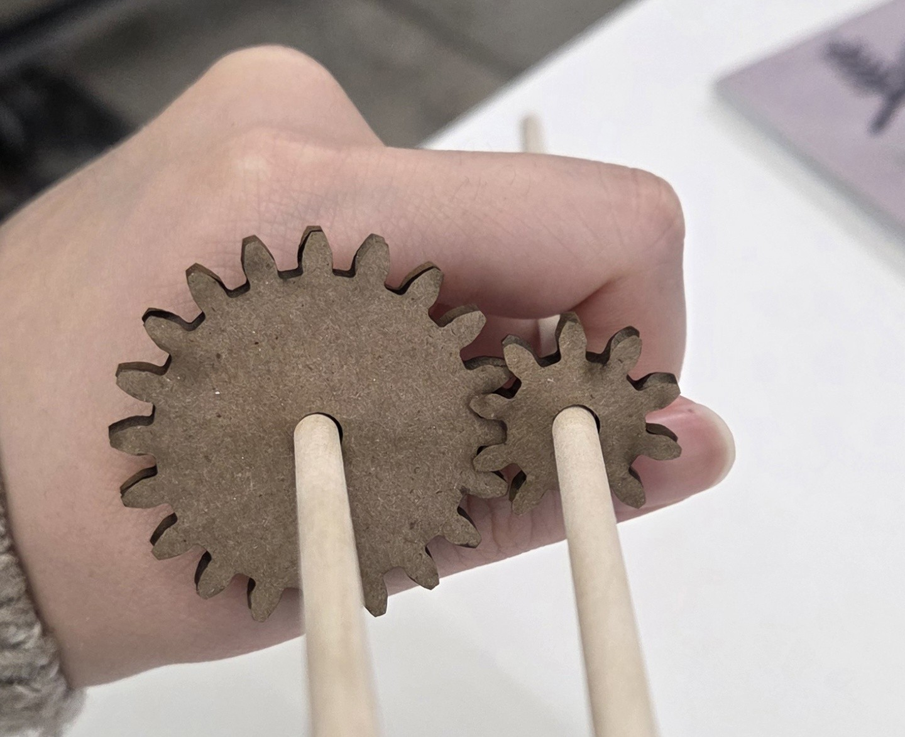
For the final version, the gears had 24 and 12 teeth instead and were made with the Fusion plug-in. I also made the gears bigger in order to acommodate the oval cams I was going to use for the up and down motion of the ducks. There were three iterations of the oval cams. First, I tried 50 mm x 35 mm, which I realized was too small to create a noticeable bobbing motion, since the ducks would be moving less than a centimeter. Then I tried 80 mm x 40 mm, which created too steep of an oval and the ducks could not climb the cams properly. Finally, I used 80 mm x 60 mm cams, which created a more gradual slope and a noticeable bobbing motion. I also designed a backing panel to hold the gears at an appropriate distance from each other and a quick box to hold the motor in place at the correct height, using screws.
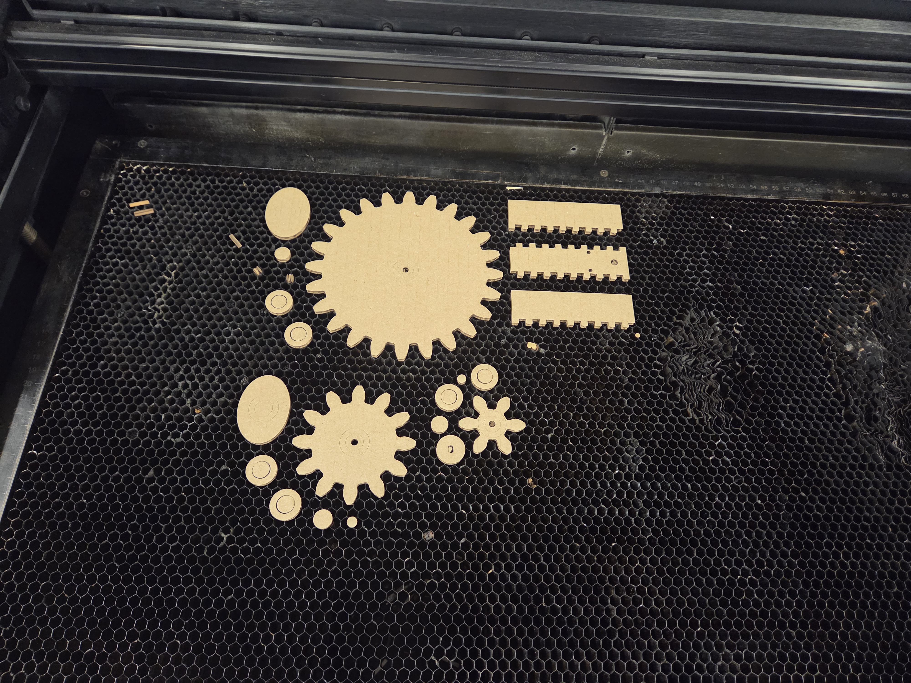
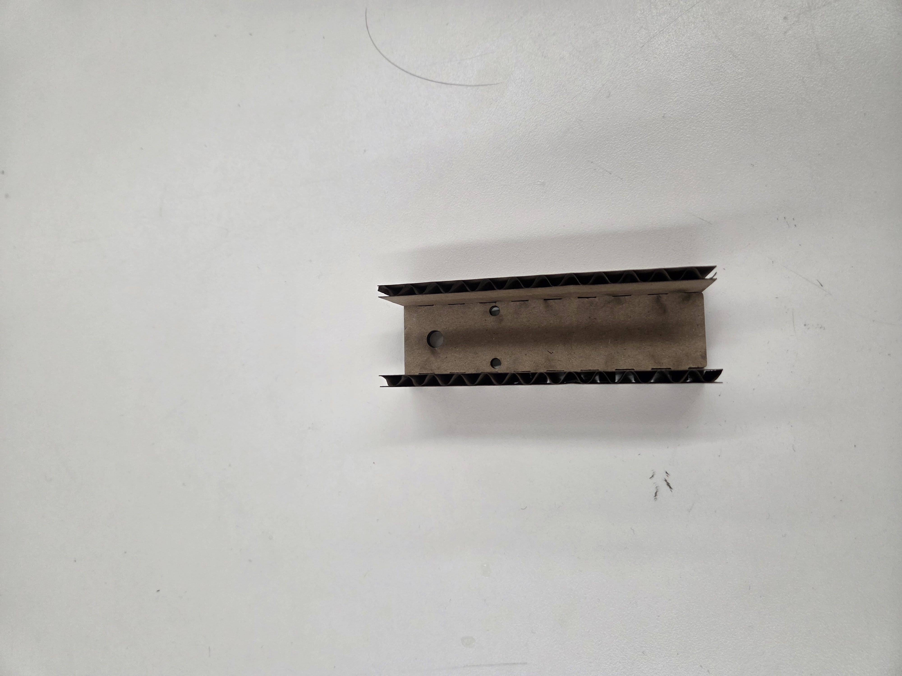
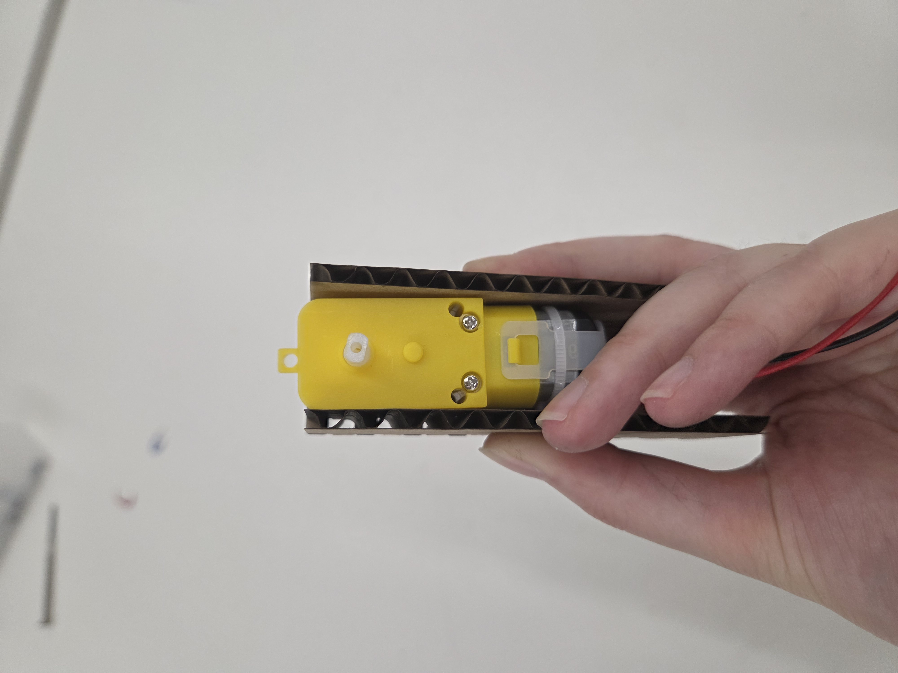
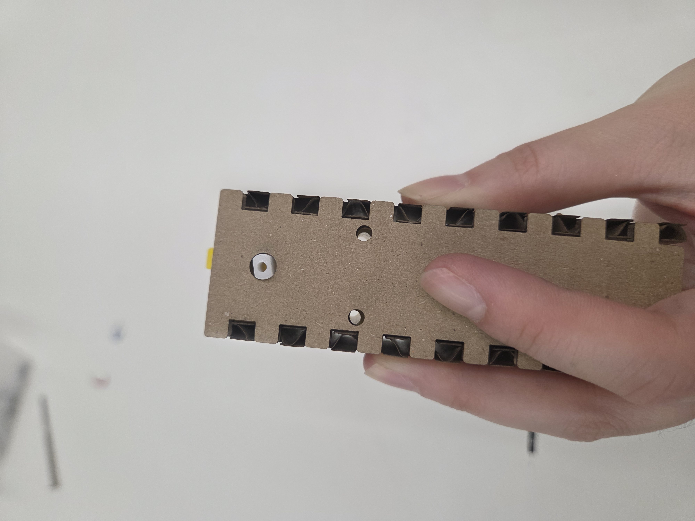
Download Gear 1 DesignDownload Gear 2 DesignDownload Motor Loading Gear DesignDownload Motor Box DesignI then mounted the motor and gears onto the backing panel, which went very smoothly. The dowels for the gears are just held in place with a cardboard circle on the backside.
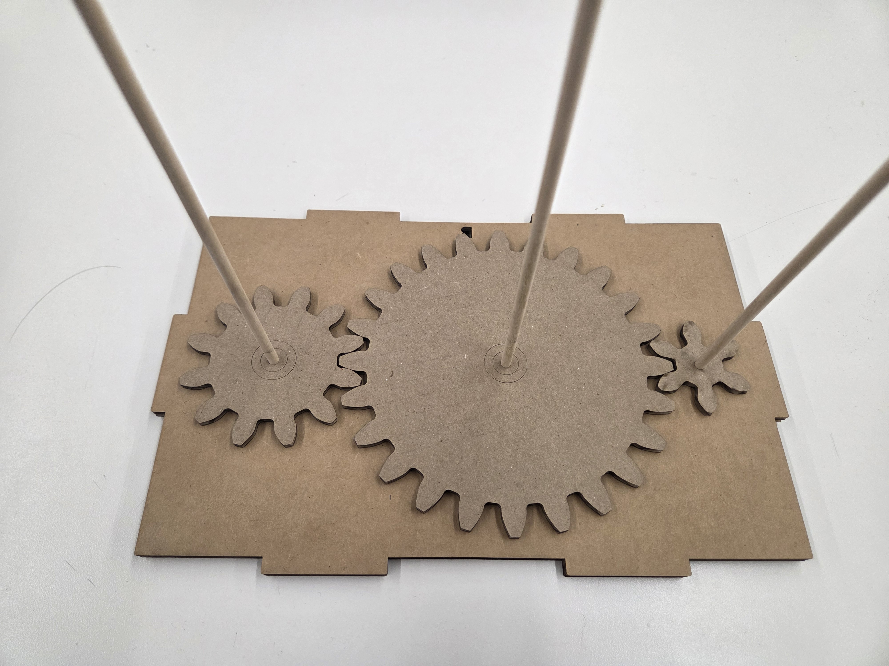
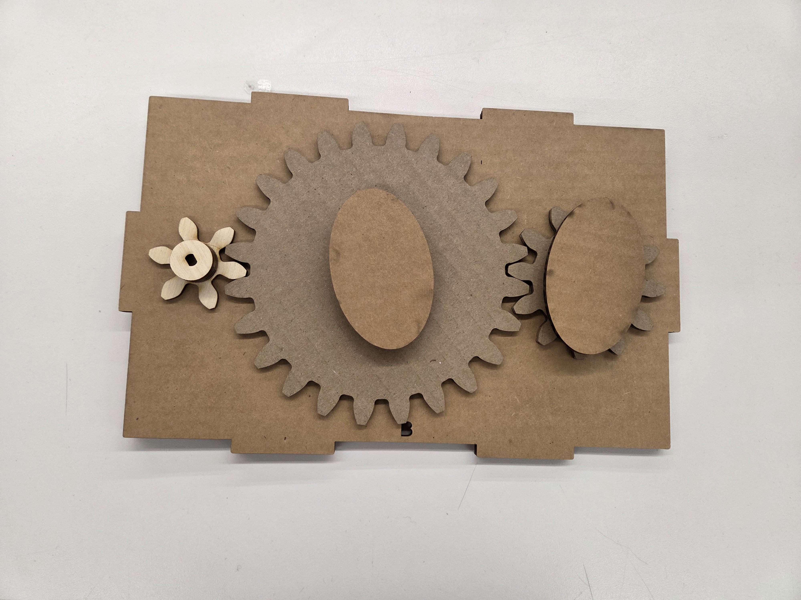
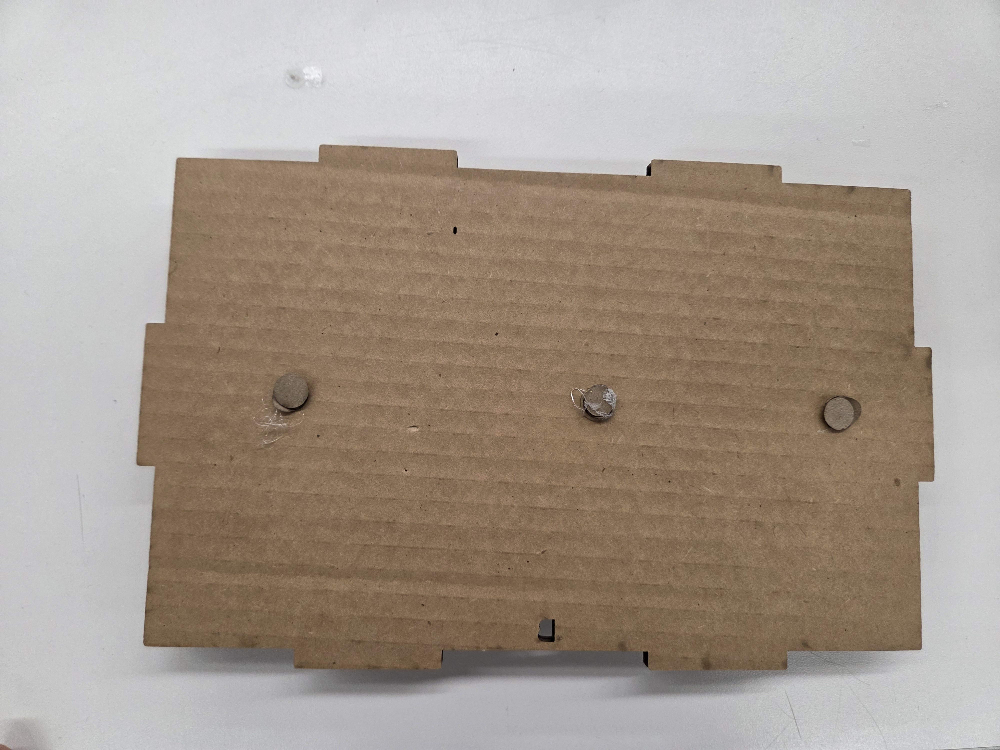
I then added a box around the motor and gears to hold the backing panel in place, and cut out the ducks and decorative wave elements for the top panel. The ducks were then mounted onto dowels and placed through the top of the box so that they rested on the top of the cams. I then had to add a small raft with rails component added to the bottom of the dowels in order to follow the cam more smoothly. Later, I also added a small extension to the top so that the dowels would no longer get dragged back by the cam and would follow better.
 Download Backing Plate and Box DesignDownload Duck and Decor Design
Download Backing Plate and Box DesignDownload Duck and Decor DesignThe model works with hand turning - however, when the motor is plugged in, it destroyed the motor loading gear's connection to the motor :( So I had to redo all of the gears in wood.
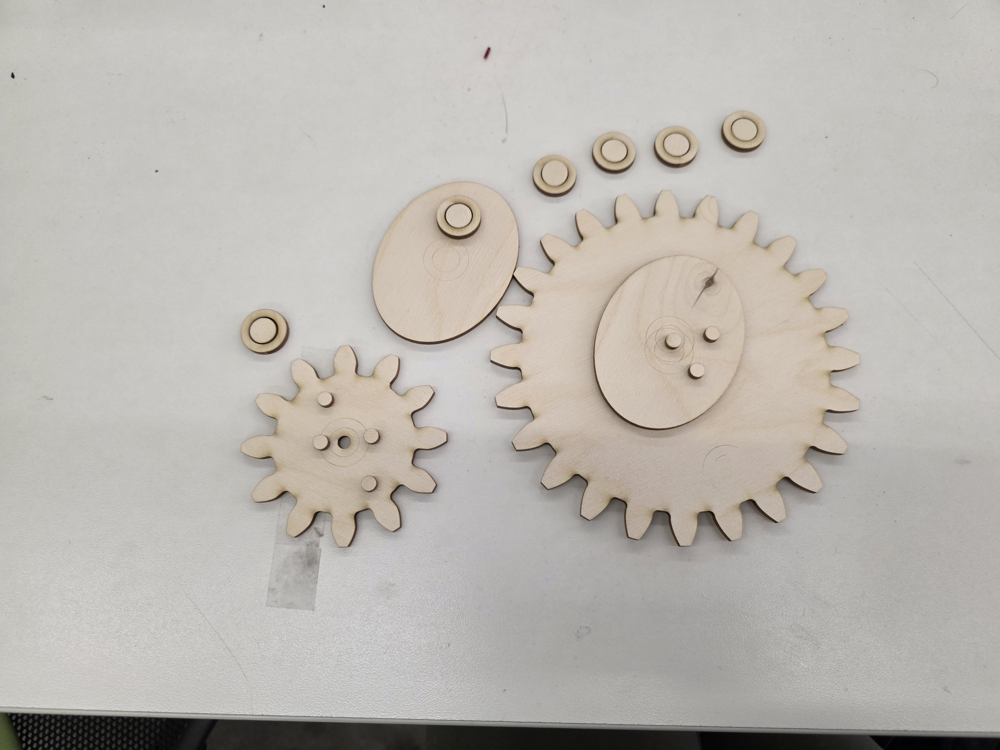
After switching to wood, the machine worked much better and the motor was able to turn the gears without any issues. The ducks bobbed up and down at different speeds, which was really fun to see! Here's the final product and video.
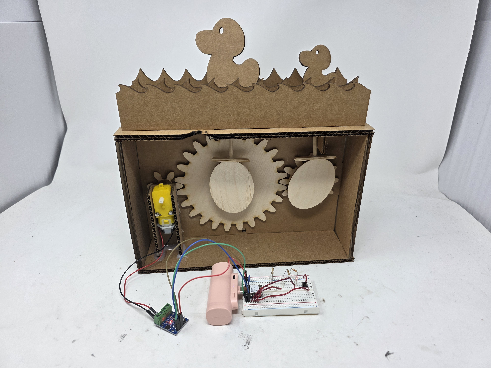